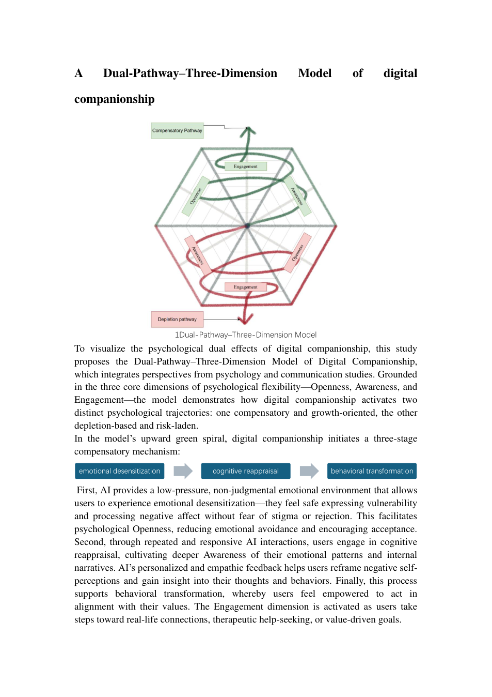

As AI companions become increasingly integrated into everyday life, their psychological implications remain complex.
Conversational AI can provide immediate emotional support, non-judgmental responses, and accessible spaces for self-expression. At the same time, prolonged or excessive reliance on these technologies may introduce risks involving emotional dependence, reduced social engagement, and difficulties in navigating interpersonal relationships.
This research examines the contrasting psychological implications of digital companionship through an interdisciplinary scoping review.
Drawing on communication studies and health psychology, the paper proposes a Dual-Pathway–Three-Dimension Model to explain how AI companionship may contribute to emotional compensation or psychological depletion.
The model integrates two possible pathways with three dimensions of psychological flexibility: Openness, Awareness, and Engagement.
RQ1 · Dual Effects
How does digital companionship produce dual effects through psychological and communicative mechanisms?
RQ2 · Psychological Flexibility
From the perspective of psychological flexibility, what factors can help us coexist healthily with digital companionship?
Scoping Review
The study employs a scoping review approach to synthesise research on digital companionship and mental health published between 2022 and 2025.
Literature searches were conducted across Web of Science, ScienceDirect, Scopus, and Wiley Online.
Search terms included digital companionship, AI companionship, chatbots, loneliness, media dependency, mental health, third-wave cognitive behavioural therapy, and media compensation theory.
The review reports the following screening process:
- 1,172 records identified through the initial search
- 65 articles retained after preliminary screening
- 21 studies included in the final synthesis
Matrix-Based Thematic Analysis
The selected literature was organised through a thematic matrix recording research objectives, key findings, and relevant concepts.
The analysis focused on two broad patterns: the potential compensatory benefits of digital companionship and the psychological risks associated with excessive dependence.
These themes informed the development of the Dual-Pathway–Three-Dimension Model.
Psychological Flexibility
The research draws on psychological flexibility as a framework for understanding how individuals respond to emotional experiences, maintain awareness of their internal states, and act in accordance with their personal values.
Three dimensions provide the conceptual foundation of the model.
Openness
Openness involves emotional acceptance and cognitive defusion: the ability to encounter difficult thoughts and feelings without excessive avoidance or becoming completely absorbed by them.
Awareness
Awareness involves present-moment attention and self-as-context, supporting the capacity to observe psychological experiences without reducing the self to any single thought or emotional state.
Engagement
Engagement concerns values and committed action: the ability to identify personally meaningful directions and translate them into behaviour.
The study uses these three dimensions to examine how digital companionship might support psychological flexibility or contribute to psychological rigidity.
Digital Emotional Compensation
The compensatory pathway describes how digital companionship may support emotional regulation, reflection, and value-oriented action.
01. Openness: Emotional Acceptance
AI companions can provide accessible spaces for expressing difficult emotions.
Immediate and non-judgmental responses may help users articulate vulnerability, process negative feelings, and approach experiences they would otherwise avoid.
The reviewed literature suggests that these interactions can sometimes facilitate emotional acceptance and reduce the immediate burden of loneliness or distress.
02. Awareness: Self-Reflection
Responsive conversations can encourage users to examine their thoughts, emotional patterns, and relational expectations.
Through dialogue, users may gain opportunities to reflect on what they feel, what they need, and how they interpret their experiences.
In this pathway, digital companionship functions as a potential resource for emotional awareness and cognitive reappraisal.
03. Engagement: Values and Action
Digital companionship may also encourage users to clarify their values and consider meaningful actions beyond the interaction itself.
The reviewed literature discusses possibilities including greater openness in interpersonal relationships, help-seeking, and renewed reflection on social and emotional needs.
Within the compensatory pathway, the value of AI companionship extends beyond immediate comfort toward the possibility of meaningful real-world engagement.
Social Skill Depletion and Psychological Rigidity
The depletion pathway examines how excessive or maladaptive reliance on digital companionship may undermine psychological flexibility.
01. Openness: Emotional Dependence
When users increasingly depend on AI for reassurance, temporary emotional relief may develop into a more rigid reliance on predictable responses.
The reviewed literature raises concerns about emotional dependence, unmet expectations, and difficulties tolerating distress without digital validation.
Rather than supporting acceptance, such patterns may reinforce emotional avoidance or cognitive fusion.
02. Awareness: Cognitive Narrowing
Highly personalised and consistently responsive interactions may encourage repetitive patterns of reflection.
The paper discusses concerns that prolonged reliance on AI-generated interpretations could narrow users' awareness of their emotions, reinforce existing assumptions, or reduce opportunities for independent critical reflection.
These risks become particularly significant when users attribute greater psychological understanding or reliability to AI systems than the technology can support.
03. Engagement: Behavioural Withdrawal
Digital companionship may also create tension between immediate emotional satisfaction and meaningful action in everyday life.
If AI interaction becomes a substitute for navigating interpersonal uncertainty, users may become less willing to engage with difficult conversations, conflicts, or relationships.
The reviewed literature additionally highlights the risk of misplaced trust in AI-generated mental health guidance, particularly when professional assistance is needed.
In the depletion pathway, immediate emotional comfort may coexist with reduced social agency and difficulties translating personal values into real-world action.
The central contribution of this paper is an interdisciplinary model connecting two psychological trajectories with three dimensions of psychological flexibility.
Compensatory Pathway
Emotional Desensitisation → Cognitive Reappraisal → Behavioural Transformation
The model proposes that a supportive digital environment may first facilitate emotional expression and acceptance.
Repeated reflection may subsequently help users reinterpret emotional experiences and clarify their needs.
These processes may support action consistent with personal values, including interpersonal reconnection or appropriate help-seeking.
Depletion Pathway
Emotional Addiction → Cognitive Narrowing → Behavioural Atrophy
The opposing pathway describes a process in which excessive reliance on AI for emotional reassurance may reinforce dependence.
This dependence may narrow users' capacity for independent emotional reflection and eventually contribute to reduced motivation or social participation.
Integrating the Two Pathways
The model organises these contrasting possibilities around three dimensions:
| Dimension | Compensatory Possibility | Depletion Risk |
|---|---|---|
| Openness | Emotional acceptance and expression | Dependence and cognitive fusion |
| Awareness | Reflection and cognitive reappraisal | Cognitive narrowing |
| Engagement | Value-oriented action | Withdrawal and behavioural stagnation |
The two pathways illustrate why digital companionship should not be understood as inherently beneficial or inherently harmful.
Its implications depend on patterns of use, psychological circumstances, and the relationship between digital interaction and users' broader lives.
The model is a conceptual framework developed through literature synthesis, rather than a clinically validated predictive model.

The review highlights a central tension in human–AI companionship: the same technological characteristics that make AI emotionally accessible may also create conditions for dependence.
Immediate availability, personalised responses, and non-judgmental interaction can offer meaningful short-term support.
However, these characteristics may also encourage users to rely on digital responsiveness while avoiding less predictable interpersonal encounters.
Psychological flexibility provides a way to examine this tension without reducing digital companionship to a simple distinction between positive and negative effects.
The paper suggests that the critical question concerns whether AI interactions support users' capacity to accept emotions, maintain awareness, and pursue personally meaningful action, or instead contribute to increasingly rigid patterns of avoidance and dependence.
Digital companionship has the potential to provide emotional support and create accessible opportunities for reflection, particularly when conventional sources of assistance are limited.
Nevertheless, its psychological implications require careful attention to emotional dependence, cognitive rigidity, social withdrawal, and the reliability of AI-generated advice.
The Dual-Pathway–Three-Dimension Model offers a conceptual framework for examining these possibilities through the relationship between emotional compensation, psychological depletion, and psychological flexibility.
The paper advocates the responsible development of digital companionship technologies that support emotional wellbeing without encouraging excessive dependence.
It also emphasises the importance of AI literacy, informed use, and maintaining meaningful connections with human relationships and professional support where appropriate.